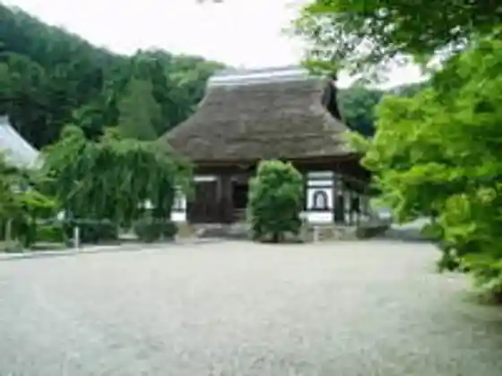
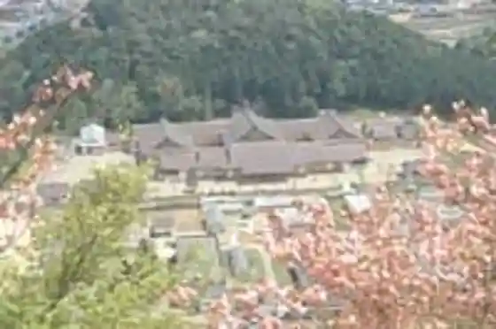
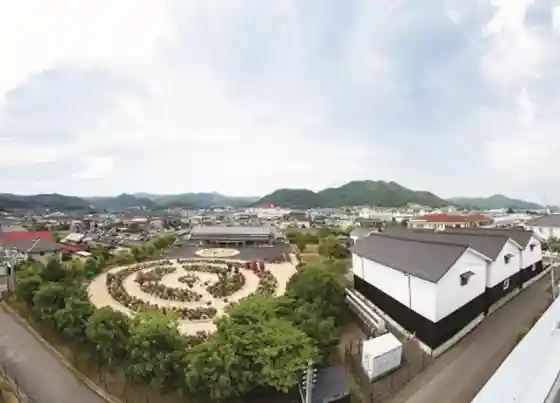

Otsu Aji Keiryu So
Ayabe, Kyoto · 0773-45-1950
Ankokuji
Ayabe, Kyoto · 0773-44-1565

Ayabe Fureai Ranch
Ayabe, Kyoto · 0773-48-1000
Ayabe Umematsu En (Omoto)
Ayabe, Kyoto · 0773-42-0187

Ayabe Gunzesukuea
Ayabe, Kyoto · 0773-43-0811

Gunze Hakubutsu En Gunze Memorial Museum
Ayabe, Kyoto · 0773-42-3181
Ayabe Tourism Association (Ayabe Tourist Information Nai)
Ayabe, Kyoto · 0773-42-9550
AYABE PEACE Park&Camp
Ayabe, Kyoto · 0773-40-2500
Ayabe Maruyama Supotsu Park / Guraundogorufu
Ayabe, Kyoto · 0773-43-1140
Wakamiya Shuzo
Ayabe, Kyoto · 0773-42-0268
Ayabe Bara Sono
Ayabe, Kyoto · 0773-43-0811
Toko In
Ayabe, Kyoto · 0773-42-2432
Shoryaku Tera
Ayabe, Kyoto · 0773-42-9550
Ki no Hana Iori (Kyu Oka Hana Ie House)
Ayabe, Kyoto · 0773-42-0187
Ryogon Tera
Ayabe, Kyoto · 0773-47-0043
Ayabe Onsen
Ayabe, Kyoto · 0773-55-0262
Ayabe Sogo Sports Park
Ayabe, Kyoto · 0773-44-0990
Sho Fuku Tera
Ayabe, Kyoto · 0773-46-0185
Ayabe Tenmonkan (Pao)
Ayabe, Kyoto · 0773-42-8080
Kurotani Washi Hall
Ayabe, Kyoto · 0773-44-0213
Ayabe Tokusan Kan
Ayabe, Kyoto · 0773-43-0811
Ayabe Satoyama Koryu Kenshu Center
Ayabe, Kyoto · 0773-47-0040
Watashi City Maruyama Kofun Park
Ayabe, Kyoto · 0773-43-1366
Kokuho Komyo Tera Nio Mon
Ayabe, Kyoto · 0773-55-0550
Shisuigaoka Park
Ayabe, Kyoto · 0773-42-9550
Ayabe Tourist Information
Ayabe, Kyoto · 0773-42-9550
Ayabe Nio Park
Ayabe, Kyoto · 0773-55-0262
Iwa Oji
Ayabe, Kyoto · 0773-42-2432
Ayabe Museum
Ayabe, Kyoto · 0773-43-1366
Yambe Castle Park
Ayabe, Kyoto · 0773-42-9550
Raijingufiirudo Yambe
Ayabe, Kyoto · 0773-45-1230